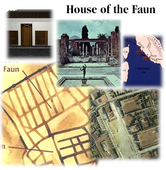

| |
 
House of the Faun
House of the Faun is a short video showing the layout and architecture of a classic Roman house. The House of the Faun was a large house in Pompeii before the eruption of Mount Vesuvius. It demonstrates the main sections and rooms of a Roman house. Pictures, drawings, and a quicktime VR view help to show what the house looks like now and what it looked like then. Shown below are some pictures from the movie.

Home
|